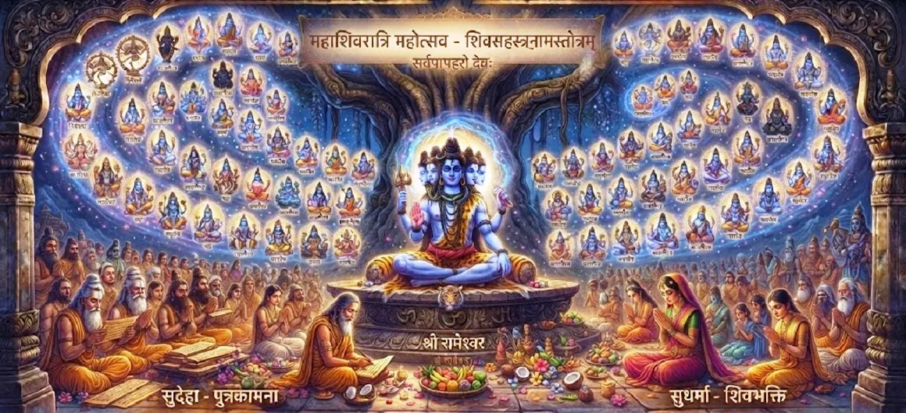

The Supreme Merit of Maha Shivaratri
The fortieth chapter of the Kotirudra Samhita elaborates on the boundless spiritual rewards, cleansing of karma, and ultimate liberation attained through the sincere observance of Maha Shivaratri.
This chapter extols the supreme fruit of this holy vrata, showing how even a single observance can transform a soul's destiny.
Chapter 40 Highlights
Boundless Merit
The immense spiritual rewards of Shivaratri.
Destruction of Sin
Purification of past karma and impurities.
Fulfillment of Desires
Attaining worldly well-being and spiritual growth.
Inner Peace
Calming the restless mind through divine grace.
Grace of Mahadeva
Securing the eternal favor of Lord Shiva.
Ultimate Liberation
Attaining union with the Supreme Reality.
Core Topics in This Chapter
The Boundless Rewards of the Vrata
This section emphasizes that observing Maha Shivaratri yields merits far greater than standard sacrifices or austerities, due to the supreme grace of Lord Shiva.
Every act of worship during the night multiplies in spiritual value.
Cleansing of Karma and Past Sins
The rigorous fast, night vigil, and abhisheka act like a spiritual fire that burns away accumulated negative karma and impurities from past lives.
The seeker emerges purified and light of heart.
Balance of Material and Spiritual Blessings
Devotees who observe this vrata receive both material prosperity in the world and steady spiritual progression toward liberation.
Shiva fulfills righteous desires while granting inner wisdom.
Transforming Human Destiny
Even individuals who have strayed or lived without prior devotion find redemption by turning to Shiva on this sacred night.
The night of Shivaratri wipes away historical limitations.
Reaching Shiva's Eternal Abode
Ultimately, the sincere observer of Maha Shivaratri transcends the cycle of birth and death, residing forever in the blissful realm of Kailasa.
This is the highest merit described in the chapter.
Transition to Chapter 41
Concluding the detailed discourse on the merits of Shivaratri, the narrative prepares for Chapter 41, which explores the liberation of devotees through dedicated Shiva worship.
Readers are invited to continue to Chapter 41.
Key Teachings of Chapter 40
Supreme Rewards
Unmatched spiritual gains from the Shivaratri vrata.
Karmic Cleansing
Burning away past sins through sincere night worship.
Dual Blessings
Worldly grace and spiritual liberation combined.
Redemption
Transforming even difficult lives into sacred journeys.
Divine Grace
Mahadeva's boundless favor upon the faithful.
Eternal Peace
Residing forever in Kailasa.
Spiritual Reflection
Chapter 40 offers profound reassurance to every spiritual seeker. It demonstrates that no matter our past mistakes or the weight of our accumulated karma, sincere devotion to Lord Shiva on Maha Shivaratri has the power to wipe the slate clean. The observance is not merely a ritual obligation, but an open doorway to divine grace, material balance, and ultimate liberation. As we reflect on the supreme merits detailed in this chapter, may we approach our spiritual practices with renewed faith, knowing that every sincere effort made toward Mahadeva yields infinite, everlasting rewards.
Living the Message of Chapter 40
Trust in the transformative power of sincere worship and let go of past guilts, knowing that Shiva's grace can cleanse all impurities.
Approach your spiritual duties with enthusiasm, recognizing that every prayer contributes to your ultimate liberation.
Maintain gratitude for the boundless blessings and protection of Mahadeva in your daily life.
Key Spiritual Concepts
The highest spiritual rewards gained from righteous acts.
The burning away of past sins and karmic debt.
The eternal, blissful realm of Lord Shiva.
The uplifting of a soul from darkness to light.
The unconditional love and favor of the Supreme.
Freedom from the cycle of birth and death.
Chapter Summary
Kotirudra Samhita Chapter 40 extols the supreme merit of observing Maha Shivaratri. It details how the vrata destroys past karma, grants both material and spiritual well-being, and leads the sincere devotee to ultimate liberation and eternal residence in Kailasa, preparing the reader for Chapter 41 on the liberation of devotees through Shiva worship.
Frequently Asked Questions
1. What is the primary theme of Kotirudra Samhita Chapter 40?
Chapter 40 highlights the supreme merit, spiritual fruits, purification of sins, and ultimate liberation gained by faithfully observing Maha Shivaratri.
2. How does this chapter follow the previous one?
After detailing the rules and observances of Maha Shivaratri in Chapter 39, this chapter explains the immense rewards and spiritual benefits generated by those rituals.
3. What kind of spiritual rewards are mentioned in this chapter?
The rewards include the destruction of past karma, fulfillment of righteous desires, inner peace, and ultimate absorption in Lord Shiva's divine abode.
4. What is the next chapter after this one?
The next chapter is Chapter 41, 'The Liberation of Devotees Through Shiva Worship'.
“The merit of observing Maha Shivaratri burns away all karmic debts and grants the seeker eternal peace and ultimate liberation in Kailasa.”
Continue Through Kotirudra Samhita
Chapter 40 reveals the supreme merit of Maha Shivaratri. Continue to Chapter 41, The Liberation of Devotees Through Shiva Worship.